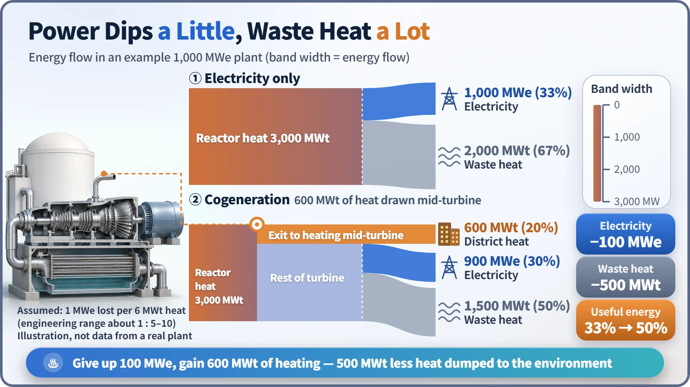
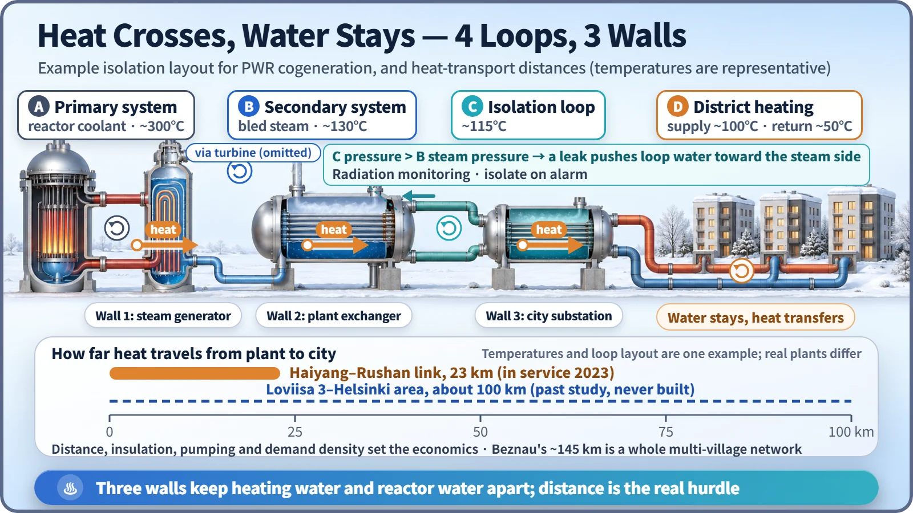

Society, Environment & the Future · 283
One Boiler Room for the Whole Neighborhood — Nuclear District Heating and the Heat We Used to Throw Away
Give up a little electricity, tap steam mid-turbine, and the heat a plant used to discard can warm a city through loops where only heat crosses over.
A nuclear plant turns only about a third of its reactor heat into electricity; the rest is discarded because the laws of thermodynamics require it. Nuclear district heating gives up a little electricity by tapping steam partway through the turbine, gaining roughly 5 to 10 units of useful heat for each unit of electricity, and sends that heat to homes through isolated loops in which only heat, never water, crosses over. [1]
Throwing heat away isn't a mistake, it's a rule
While a nuclear plant makes 1 unit of electricity, its reactor puts out about 3 units of heat. Two-thirds leave with seawater or river water. That sounds sloppy, but every heat engine must hand part of its heat to a cold side to turn the rest into work: the second law of thermodynamics.
The ceiling is set by two absolute temperatures: maximum efficiency = 1 − (cold ÷ hot). With pressurized water reactor steam at about 280°C and a condenser at about 35°C, the theoretical limit is about 44%, and after real losses the actual efficiency is around 33%. Coal plants throw heat away too.
The discarded heat is plentiful but only about 30 to 40°C, like a lukewarm bath, while a heating network usually needs 70 to 120°C.
Trade a little electricity for a lot of heat
The fix is to tap some steam partway through the turbine while it is still well above 100°C (steam extraction) and use it to heat district heating water. Because that steam no longer drives the rest of the turbine, electricity drops a little. Making electricity and heat together is combined heat and power (CHP), or cogeneration.
For every 1 unit of electricity given up, you gain roughly 5 to 10 units of heat. In one line: reactor heat = electricity + heating + discarded heat. [1]

| Example plant (3,000 MWt) | Electricity only | Cogeneration |
|---|---|---|
| Electricity | 1,000 MWe | 900 MWe (−10%) |
| District heat | 0 | 600 MWt |
| Discarded heat | 2,000 MWt | 1,500 MWt (−25%) |
| Share put to use | 33% | 50% |
A unit of lukewarm heat isn't worth as much as a unit of electricity, so electricity remains the more valuable product. These are illustrative numbers, not values from a real plant.
How one boiler room heats a whole complex
Picture an apartment complex where one big boiler room makes hot water and circulates it to every building instead of a boiler in each home. That is district heating; nuclear district heating puts a nuclear plant, with its leftover heat, in place of the boiler room.
Could radioactivity get into that water? A pressurized water reactor already has two separate water circuits: the primary water that flows through the reactor and the secondary water that makes steam exchange only heat across the steam generator's metal tubes. Heating heat is drawn from the secondary steam, and an extra intermediate isolation loop is added, so the city's heating water is separated from the reactor coolant by several heat-exchanger walls. [1]

It is a standard design principle to keep the intermediate loop at a higher pressure than the steam side. If a tiny crack ever opened in a heat-exchanger tube, clean loop water would be pushed toward the steam side rather than steam leaking into the city's water, and monitors isolate the system if anything unusual is detected.
Cities already being heated
Switzerland's Beznau plant has sent heat to about eleven nearby communities since the mid-1980s, through a network of about 145 km serving more than 2,600 buildings. [3] Slovakia's Bohunice plant has heated the nearby city of Trnava since 1987, and a number of plants in Russia and Eastern Europe have long heated their neighboring towns. [4]
In China's Shandong province, heat from two reactors at Haiyang began warming the whole city, about 5.2 million m² of floor space, in the winter of 2021. In 2023 a 23 km pipeline reached the neighboring city of Rushan, and supply was announced for about 12.5 million m², roughly 400,000 people. [2]
Heat can't travel as far as electricity
Electricity travels hundreds of kilometers over a few wires, but heat must be carried as hot water in thick insulated pipes and pushed by pumps. Every kilometer costs construction money and pumping power, and the water cools along the way. Distance, insulation and the density of customers decide the economics, so the target is usually a city within a few to a few tens of kilometers. A pipeline of about 100 km from Finland's Loviisa plant to the Helsinki area was studied but never built. [1]
Key takeaways
A nuclear plant discards two-thirds of its heat because of the second law of thermodynamics, and that heat is too cool to use directly. By giving up a little electricity and tapping steam early, it can heat a city, with water kept apart in several isolated loops so that only heat crosses over. The remaining challenge is the distance to the city.